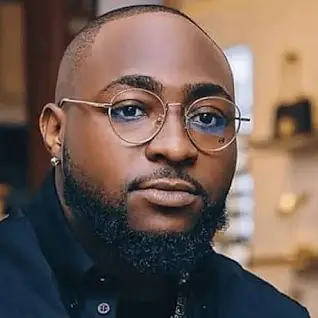

DAVIDO
A Nigerian singer and songwriter :

David Adedeji Adeleke OON, known professionally as Davido, is a Nigerian singer, songwriter and record producer. He is regarded as one of the most important Afrobeats artists of the 21st century, and is credited alongside Burna Boy and Wizkid for popularizing
the genre globally
Born:
21 November 1992 (age 31 years), Atlanta, Georgia, United States
Children: Hailey Veronica Adeleke, David Adedeji Adeleke Jr.
Record lebel:
Davido Music Worldwide, Sony Music Entertainment, HKN Music, RCA Records, Columbia Records
Parents
Adedeji Adeleke, Veronica Adeleke
Sibilings
Sharon Adeleke, Adewale Adeleke
Generes
Afrobeats; Afropop; pop
DAVIDO'S NETHWORTH
As of 2024, Davido's net worth is estimated to be around $40 million.